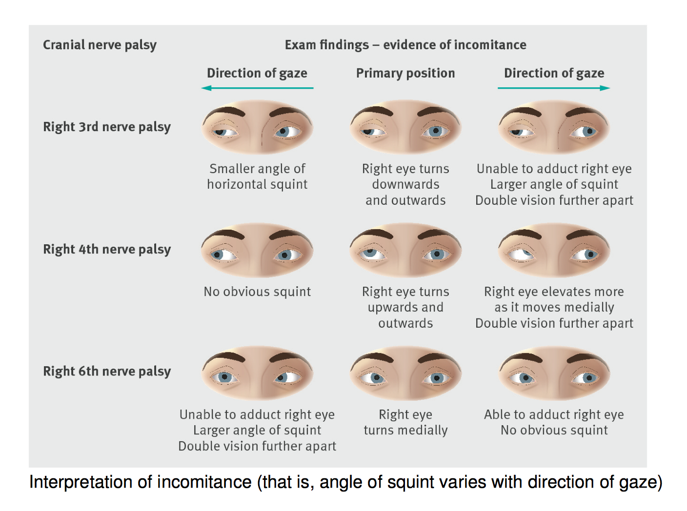

Hướng dẫn
Lập trình và Việt hóa: Nguyễn Đức Thịnh CH27 Nhãn khoa HMU
Nội dung các bước khám:
+ Bước 1: quan sát và xác định mắt nào của người bệnh bị lác trên. Qua đó có thể khu trú được 4 khả năng tổn thương cơ trong số 8 khả năng gây lác trên.
+ Bước 2: yêu cầu người bệnh liếc mắt sang phải và sang trái rồi quan sát xem độ lác đứng tăng thêm ở vị trí nào. Kết quả sẽ giúp loại bỏ thêm 2 khả năng nữa (vậy chỉ còn 2 khả năng cơ bị tổn thương (mỗi mắt 1 khả năng), đó là 2 cơ làm nhãn cầu xoáy vào trong hay ra ngoài và 2 cơ trên hay dưới (1 cơ thẳng và 1 cơ chéo).
+ Bước 3: thử nghiệm nghiêng đầu Bielschowsky. Hướng dẫn người bệnh nghiêng đầu sang phải và sang trái. Nghiêng đầu sang phải sẽ kích thích động tác xoáy vào trong của mắt phải và xoáy ra ngoài của mắt trái. Nghiêng đầu sang trái sẽ kích thích động tác xoáy ra ngoài của mắt phải và xoáy vào trong của mắt trái. Bình thường 2 cơ xoáy mắt vào trong và 2 cơ xoáy mắt ra ngoài của mỗi mắt sẽ đối lập nhau trong động tác nhìn theo chiều đứng và như vậy sẽ triệt tiêu lẫn nhau. Nếu liệt một cơ xoáy mắt vào trong hay ra ngoài thì nó không thể liếc được theo chiều đứng và động tác vận nhãn theo chiều đứng của cơ đồng vận cùng mắt làm mắt xoáy vào trong sẽ được thể hiện.
+ Bước 1: quan sát và xác định mắt nào của người bệnh bị lác trên. Qua đó có thể khu trú được 4 khả năng tổn thương cơ trong số 8 khả năng gây lác trên.
+ Bước 2: yêu cầu người bệnh liếc mắt sang phải và sang trái rồi quan sát xem độ lác đứng tăng thêm ở vị trí nào. Kết quả sẽ giúp loại bỏ thêm 2 khả năng nữa (vậy chỉ còn 2 khả năng cơ bị tổn thương (mỗi mắt 1 khả năng), đó là 2 cơ làm nhãn cầu xoáy vào trong hay ra ngoài và 2 cơ trên hay dưới (1 cơ thẳng và 1 cơ chéo).
+ Bước 3: thử nghiệm nghiêng đầu Bielschowsky. Hướng dẫn người bệnh nghiêng đầu sang phải và sang trái. Nghiêng đầu sang phải sẽ kích thích động tác xoáy vào trong của mắt phải và xoáy ra ngoài của mắt trái. Nghiêng đầu sang trái sẽ kích thích động tác xoáy ra ngoài của mắt phải và xoáy vào trong của mắt trái. Bình thường 2 cơ xoáy mắt vào trong và 2 cơ xoáy mắt ra ngoài của mỗi mắt sẽ đối lập nhau trong động tác nhìn theo chiều đứng và như vậy sẽ triệt tiêu lẫn nhau. Nếu liệt một cơ xoáy mắt vào trong hay ra ngoài thì nó không thể liếc được theo chiều đứng và động tác vận nhãn theo chiều đứng của cơ đồng vận cùng mắt làm mắt xoáy vào trong sẽ được thể hiện.
Các ảnh minh họa
